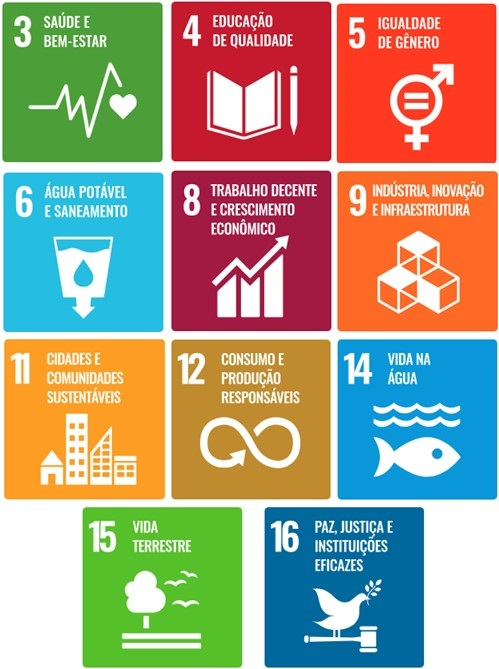

Materializando la Sostenibilidad
En el contexto global contemporáneo, la búsqueda de sostenibilidad es una meta imperativa que trasciende fronteras y desafía a organizaciones y gobiernos en todo el mundo. En este sentido, los Objetivos de Desarrollo Sostenible (ODS) establecidos por la Organización de las Naciones Unidas (ONU) emergen como un hito crucial en el camino hacia un futuro más equitativo, resiliente y próspero para todos. Entender y aplicar los principios subyacentes a los ODS es fundamental no solo para satisfacer las necesidades del presente sino también para asegurar la viabilidad de las generaciones futuras y la preservación de los principios ESG (Ambiental, Social y de Gobernanza) en el proyecto de engorde de Matinhos representa un hito significativo.


Logros para Compartir
Las obras de revitalización de la orilla de Matinhos son un hito para el Estado de Paraná. La gran transformación para la costa solo fue posible mediante el uso de técnicas innovadoras, tanto en la construcción civil como en la conservación del medio ambiente. Dentro de este gran emprendimiento de innovaciones, existe el compromiso de presentar a la sociedad los resultados del desarrollo sostenible, asumido por todos los involucrados en este proyecto.
Mediante la aplicación de los programas ambientales, sociales y de gobernanza, fue posible adecuar la obra de revitalización de la orilla de Matinhos con 11 de los 17 Objetivos de Desarrollo Sostenible (ODS), delimitados por la ONU.
Cómo lo Hacemos
Somos una iniciativa para guiar a empresas y emprendimientos de todos los tamaños o sectores hacia el objetivo del cumplimiento ambiental, social y de gobernanza.
De Cero a Sostenible

Nuestro equipo de especialistas puede actuar desde el inicio de las acciones de sostenibilidad, hasta en cuestiones puntuales de empresas que ya tienen la cultura ESG bien consolidada y buscan mejoras en sus indicadores.
Nuestro compromiso profesional es entregar a cada emprendimiento una plataforma personalizada para seguir y monitorear las acciones realizadas.
Acciones para la implementación de la cultura ESG

Diagnóstico y mapeo

Comités de sostenibilidad
Estudio de Materialidad

Acciones de compromiso
Acciones para el perfeccionamiento de los indicadores

Métricas e indicadores
Sensibilización y formación

Planificación estratégica
Mejora continua y presentación de logros

Mejora continua

Elaboración de políticas

Informe ESG